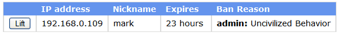

The ban list displays information about what users have been banned, why they were banned and when the ban will
expire.
The ban list does not automatically update. If you want to update the list, select the Refresh button.

In the example above, the IP address 192.168.0.109 has been banned as well as the nickname mark. If a user attempts
to login with this IP address or nickname, they will not be able to login. The Expires field shows how much time is
left until the ban is automatically lifted. The Ban reason displays the reason the user was banned. This is entered
when an administrator bans someone. If the ban was the result of an automatic check (i.e. for flooding
or profanity) RealChat will automatically update the reason.
To lift a single ban, press the Lift button for the IP address and Nickname you want to allow to access the chat
server.
To lift all bans, select the Lift ALL Bans button.